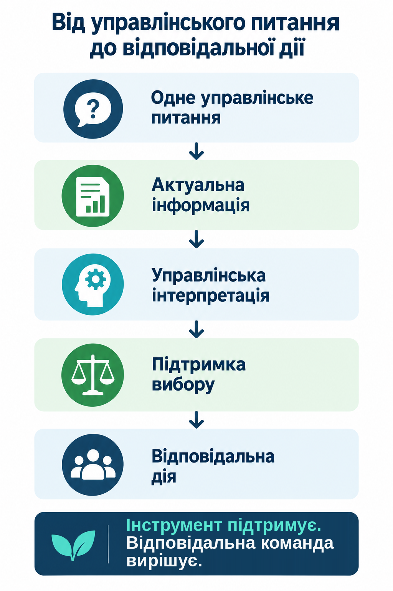

Офіційний протокол міста Мадрид щодо епізодів NO₂
Поточна логіка протоколу: рівні, визначені протоколом, погодні умови, сценарії реагування та відповідальність міста.
Відкрити офіційний ресурс ↗UCAN · ЗАНЯТТЯ 14
Системи підтримки рішень: від інтуїції до розрахунків
У міському управлінні рішення часто потрібно приймати тоді, коли ситуація вже змінюється, а повної визначеності немає. Моніторинг допомагає бачити актуальні умови. Але самі цифри, сигнали чи показники ще не пояснюють, що робити.
Це заняття показує, як перейти від актуальної інформації до осмисленої дії: спочатку сформулювати одне конкретне рішення, потім визначити, яка інформація для нього справді потрібна, зрозуміти, що вона означає, використати її для вибору дії та чітко визначити, хто ухвалює рішення і відповідає за виконання.
Після цього заняття Ви зможете:
Картка рішення — короткий робочий матеріал, у якому Ви пов’яжете конкретне рішення, актуальну інформацію, її управлінське значення, те, як інформація підтримує вибір та відповідальну дію.
Уявіть: одна станція показує різке зростання NO₂ — діоксиду азоту, не CO₂. Чи має місто одразу обмежувати рух — чи одного сигналу замало? Це умовний навчальний приклад, а не документована подія в Мадриді. Дані ще не є рішенням.
Мадрид використовує мережу моніторингу й офіційні погодинні дані. Одного ізольованого високого значення недостатньо: важливо, на яких станціях його зафіксовано і скільки часу воно тримається. Як один конкретний приклад, PREAVISO (попереджувальний рівень) визначається за NO₂ >180 μg/m³, якщо перевищення одночасно триває або на двох станціях однієї зони протягом двох послідовних годин, або на трьох станціях мережі протягом трьох послідовних годин. Якщо рівень перевищено або прогнозується його перевищення, несприятливий прогноз погоди є додатковою умовою для початку епізоду, а не частиною числового порога.
У протоколі також є AVISO (рівень попередження) та ALERTA (рівень тривоги). PREAVISO, AVISO й ALERTA — це рівні, визначені протоколом. Сценарій реагування — це наступний крок: він допомагає зрозуміти, які дії відповідають такій ситуації. Сценарії окреслюють категорії можливих заходів: інформування й рекомендації, громадський транспорт, швидкість, паркування або рух. Ввести або припинити передбачені заходи та забезпечити їх виконання мають відповідальні міські органи й посадові особи. Дані й протокол самі рішення не ухвалюють.
Спочатку місто бачить сигнал. Потім команда з’ясовує, що він означає для конкретного рішення. Після цього співвідносить ситуацію з відповідним сценарієм і розглядає передбачені дії. Рішення про дію та відповідальність за виконання залишаються за містом.
Офіційні джерела прикладу: Офіційний протокол міста Мадрид щодо епізодів NO₂ ↗ · Як Мадрид застосовує сценарії реагування на NO₂ ↗
D1 — Яке конкретне рішення потрібно підтримати? У Мадриді питання просте й конкретне: чи склалася поточна або прогнозована ситуація, за якої місту потрібно розглядати дії, передбачені протоколом? Спочатку визначте рішення. Лише після цього з’ясовуйте, яка інформація для нього справді потрібна.
Потрібні не всі доступні дані, а ті, що можуть змінити конкретне рішення: концентрація NO₂, на яких станціях і в яких частинах міста зафіксовано підвищення, скільки годин воно триває та що показує прогноз, зокрема чи є несприятливі погодні умови. Моніторинг відповідає: «Що ми бачимо зараз?» — але ще не обирає дію.
Короткі приклади сигналів поза Мадридом: рівень води, спека, скарги мешканців або повторювані затримки автобусів. Це не окремі нові історії: відбирайте лише те, що може змінити конкретне рішення.
Між «ми отримали дані» і «ми знаємо, що робити» є ще один крок — управлінська інтерпретація. Це розуміння того, що ці дані означають саме для рішення зараз. Моніторинг показує, що відбувається. Інтерпретація пояснює, чому це важливо для вибору дії.
У Мадриді команда дивиться не на одне число, а на поєднання ознак: концентрацію, на яких станціях і в яких частинах міста зафіксовано підвищення, скільки годин воно триває та несприятливий прогноз погоди. PREAVISO / AVISO / ALERTA — це рівні, визначені протоколом. Сценарій реагування — це наступний крок: він допомагає зрозуміти, які дії відповідають такій ситуації.
Рівень води — це факт, але для управлінської інтерпретації можуть бути важливими також швидкість підйому, місце, прогноз і вразлива інфраструктура. Спека — це факт, але значення для рішення може залежати від тривалості, нічних температур, прогнозу та вразливих груп. Це лише короткі пояснювальні приклади, а не нові окремі ситуації.
Після інтерпретації команда вже знає не лише, що відбувається, а й чому це важливо саме для конкретного рішення.
Підтримка рішення допомагає команді зрозуміти можливі дії, але не ухвалює рішення замість неї. У Мадриді визначена ситуація та її тривалість співвідносяться з одним із п’яти сценаріїв, а сценарій окреслює обмежені категорії можливих заходів. Протокол задає правила, за якими команда співвідносить ситуацію з відповідним сценарієм реагування. Моніторинг може подати сигнал, панель моніторингу — показати зміну, програмна система — помітити закономірність у даних. Остаточне рішення залишається за уповноваженою людиною або органом.

У Мадриді протокол допомагає структурувати реакцію. Введення або припинення передбачених заходів та їх виконання залишаються відповідальністю міських органів і посадових осіб. Дані й протокол не ухвалюють рішення самі.
Хто бачить сигнал? → Хто його перевіряє? → Хто з’ясовує, що він означає? → Хто готує варіанти? → Хто має повноваження ввести потрібні заходи? → Хто відповідає за виконання?
Спочатку місто бачить сигнал. Потім команда з’ясовує, що він означає. Після цього визначає можливі дії. І лише тоді відповідальна людина або орган ухвалює рішення та відповідає за його виконання.
Скористайтеся таблицею як короткою перевіркою — без повторного переказу прикладу Мадрида.
| Ланка | Управлінське питання |
|---|---|
| D1 | Яке конкретне рішення потрібно підтримати? |
| D2 | Які дані можуть змінити це рішення? |
| D3 | Що ця комбінація даних означає саме зараз? |
| D4 | Які варіанти дії відповідають цій ситуації? |
| D5 | Хто має повноваження діяти і хто відповідає за виконання? |
Не копіюйте мадридські пороги або транспортні заходи. Переносьте саму логіку: спочатку визначте рішення, потім зберіть актуальну інформацію, з’ясуйте її значення, окресліть можливі дії й чітко визначте, хто ухвалює рішення та відповідає за виконання.
Офіційне джерело синтезу: Офіційний протокол міста Мадрид щодо епізодів NO₂ ↗
Сенсори й панелі моніторингу самі по собі не дають послідовної дії. Команда має розуміти, що означає сигнал, коли потрібна реакція, які дії доречні і хто ухвалює рішення.
А тепер — коротка перевірка.
Спробуйте перенести цю логіку на іншу муніципальну ситуацію.
Нижче — умовна навчальна ситуація. Вона не описує конкретне місто. Використайте її як коротку самоперевірку: завдання не оцінюється і не впливає на завершення заняття.
Перед початком перевірте лише одне: чи можете Ви пов’язати одне управлінське питання з інформацією, потрібною для рішення, обґрунтованим тлумаченням, підтримкою вибору та чіткою відповідальністю — без копіювання мадридських умов?
Для Мадрида тут повторено офіційні джерела, щоб Ви могли окремо переглянути правила протоколу, сценарії реагування, звіти про фактичні епізоди та погодинні дані. Додаткові OECD і C40/EY залишаються ресурсами про врядування міськими даними.
Поточна логіка протоколу: рівні, визначені протоколом, погодні умови, сценарії реагування та відповідальність міста.
Відкрити офіційний ресурс ↗Офіційне пояснення сценаріїв реагування та категорій заходів. Допомагає побачити різницю між рівнем, визначеним протоколом, і сценарієм реагування.
Відкрити офіційний ресурс ↗Архів звітів про реальні епізоди. Допомагає відрізняти правила протоколу від опису конкретних випадків.
Відкрити офіційний ресурс ↗Офіційні погодинні дані зі станцій моніторингу — джерело для розуміння поточної / моніторингової інформації.
Відкрити офіційний ресурс ↗Корисно, якщо Ви хочете перевірити, які умови якості, відповідальності та врядування роблять міські дані придатними для управлінського використання.
Відкрити офіційний ресурс ↗Корисно для розуміння ролей, відповідальності та управління кліматичними даними. Зосередьтеся на організаційних умовах, а не на оцінці «зрілості» як меті цього заняття.
Відкрити офіційний ресурс ↗Картка рішення допомагає зафіксувати не просто дані, а повну управлінську логіку одного рішення. Оберіть реальне питання Вашої громади, для якого актуальна інформація може змінити управлінську дію.
Ви вже окремо попрацювали з управлінським питанням, актуальною інформацією, її значенням, підтримкою вибору та відповідальністю. Тепер зберіть їх в один управлінський об’єкт для власного рішення.
Це Ваш робочий управлінський матеріал. Він не оцінюється балами і сам по собі не є умовою завершення заняття. Його цінність — у тому, щоб Ви могли використати його в робочій розмові з відповідальною командою.
Орієнтовний час виконання: 15–20 хвилин.
ШІ може бути корисним для критичної перевірки логіки Вашої картки: чи не змішуєте Ви інформацію з інтерпретацією, чи зрозуміло показано, як дані підтримують вибір, і чи не загубилася людська відповідальність. Використовуйте лише ті відомості, які свідомо готові передати, перевіряйте відповідь самостійно і не дозволяйте ШІ вигадувати поточні дані, встановлювати непідтверджені пороги або приймати муніципальне рішення замість Вас.
Зовнішні сервіси нічого не отримують автоматично. Ви самі вирішуєте, що копіювати й передавати. Не вводьте персональні або конфіденційні дані. Відповідь ШІ потребує перевірки та не замінює відповідальну муніципальну оцінку.
Фінальна перевірка використовує іншу ситуацію, ніж приклад Мадрида та тренувальна вправа. Нижче — умовна громада, яка вирішує, чи скоригувати полив міських зелених зон у сухий спекотний період. Це навчальний сценарій, а не опис реального міста.
Обирайте відповідь, яка найкраще показує застосування логіки заняття в новій муніципальній ситуації.
Сьогодні ми розібрали, як перейти від актуального сигналу до обґрунтованої та відповідальної управлінської дії: визначити рішення, відібрати потрібну інформацію, зрозуміти її значення, окреслити можливі дії та зберегти чітку відповідальність за вибір.
Ми працювали з рішеннями, які потрібно приймати зараз.
Далі в курсі ми ще повернемося до іншого важливого питання — як оцінювати, чи дає міська програма або політика очікувані результати в довшій перспективі.
Після успішної фінальної перевірки переходьте до наступного етапу курсу. Практичну картку збережіть як робочий матеріал для розмови з командою, яка відповідає за обране Вами рішення.